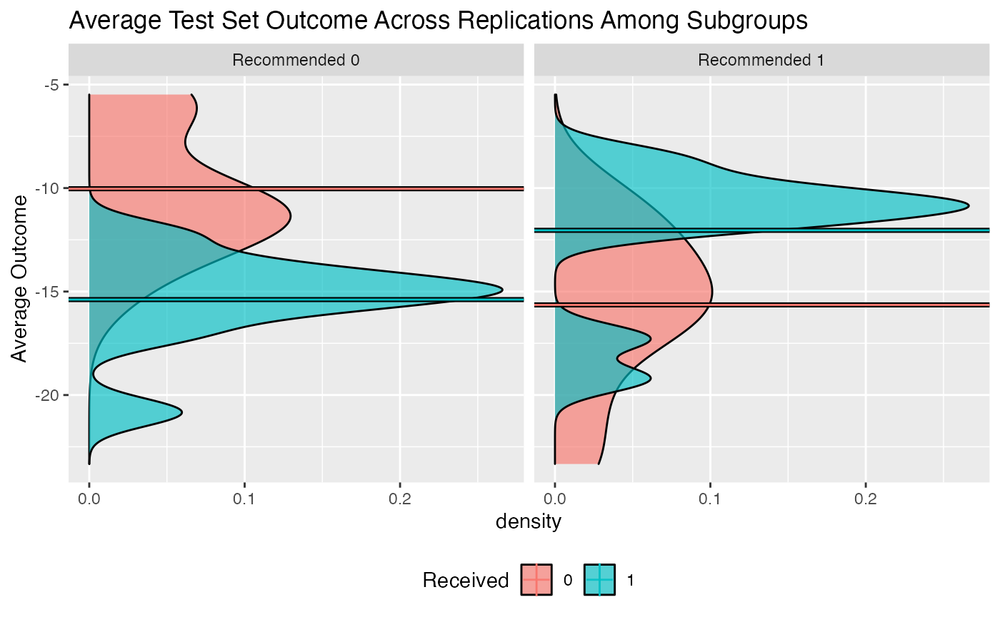

Usage of the Personalized Package
Jared Huling
2018-03-31
Introduction to personalized
The personalized package aims to provide an entire analysis pipeline that encompasses a broad class of statistical methods for subgroup identification / personalized medicine.
The general analysis pipeline is as follows:
- Construct propensity score function and check propensity score diagnostics
- Choose and fit a subgroup identification model
- Estimate the resulting treatment effects among estimated subgroups
- Visualize and examine model and subgroup treatment effects
The available subgroup identification models are those under the purview of the general subgroup identification framework proposed by Chen, et al. (2017). In this section we will give a brief summary of this framework and what elements of it are available in the personalized package.
In general we are interested in understanding the impact of a treatment on an outcome and in particular determining if and how different patients respond differently to a treatment in terms of their expected outcome. Assume the outcome we observe \(Y\) is such that larger values are preferable. In addition to the outcome, we also observe patient covariate information \(X \in \mathbb{R}^p\) and the treatment status \(T \in \{-1,1\}\), where \(T = 1\) indicates that a patient received the treatment, and \(T = -1\) indicates a patient received the control. For the purposes of this package, we assume that the expected outcome conditional on the covariate and treatment status information can be represented by \[E(Y|X, T) = g(X) + T\Delta(X).\] Here, \(\Delta(X)\) represents the interaction between treatment and covariates and \(g(X)\) represents the main effects of the patient covariate information on the outcome.
We call the term \(\Delta(X)\) a benefit score, as it reflects how much a patient is expected to benefit from a treatment in terms of their outcome. For a patient with \(X = x\), if \(\Delta(x) > 0\) (assuming larger outcomes are better), the treatment is beneficial in terms of the expected outcome, and if \(\Delta(X) \leq 0\), the control is better than the treatment. Hence to identify which subgroup of patients benefits from a treatment, we seek to estimate \(\Delta(X)\).
In the framework of Chen, et al. (2017), there are two main methods for estimating subgroups. The first is called the weighting method. The weighting method estimates \(\Delta(X)\) by minimizing the following objective function with respect to \(f(X)\): \[L_W(f) = \frac{1}{n}\sum_{i = 1}^n\frac{M(Y_i, T_i\times f(x_i)) }{ {T_i\pi(x_i)+(1-T_i)/2} },\] where \(\pi(x) = Pr(T = 1|X = x)\) is the propensity score function. Here, \(\hat{f}\) is our estimated benefit score. Hence \(\hat{f} = \mbox{argmin}_f L_W(f)\) is our estimate of \(\Delta(X)\). If we want a simple functional form for the estimate \(\hat{f}\), we can restrict the form of \(f\) such that it is a linear combination of the covariates, i.e. \(f(X) = X^T\beta\). Hence \(\hat{f}(X) = X^T\hat{\beta}\).
The A-learning estimator is the minimizer of \[L_A(f) = \frac{1}{n}\sum_{i = 1}^n M(Y_i, {\{(T_i+1)/2 -\pi(x_i)\} } {\times f(x_i))}.\]
Choice of \(M\) function
The personalized package offers a flexible range of choices both for the form of \(f(X)\) and also for the loss function \(M(y, v)\). Most choices of \(f\) and \(M\) can be used for either the weighting method or for the A-learning method. In this package, we limit the use of \(M\) to natural choices corresponding to the type of outcome. The squared error loss \(M(y, v) = (v - y) ^ 2\) corresponds to continuous responses but can also be used for binary outcomes, however the logistic loss \(M(y, v) = y \cdot log(1 + \exp\{-v\})\) corresponds to binary outcomes and the loss associated with the negative partial likelihood of the Cox proportional hazards model corresponds to time-to-event outcomes.
| Name | Outcomes | Loss |
|---|---|---|
| Squared Error | C/B | \(M(y, v) = (v - y) ^ 2\) |
| OWL Logistic | C/B | \(M(y, v) = y\log(1 + \exp\{-v\})\) |
| OWL Logistic Flip | C/B | \(M(y, v) = \vert y\vert \log(1 + \exp\{-\mbox{sign}(y)v\})\) |
| OWL Hinge | C/B | \(M(y, v) = y\max(0, 1 - v)\) |
| OWL Hinge Flip | C/B | \(M(y, v) = \vert y\vert\max(0, 1 - \mbox{sign}(y)v)\) |
| Logistic | B | \(M(y, v) = -(yv - \log(1 + \mbox{exp}\{-v\}))\) |
| Cox | TTE | \(M(y, v) = -\left\{ \int_0^\tau\left( v - \log[E\{ e^vI(X \geq u) \}] \right)\mathrm{d} N(u) \right\}\) |
where “C” indicates usage for continuous outcomes, “B” indicates usage for binary outcomes, and “TTE” indicates usages for time-to-event outcomes, and for the last loss \(y = (X, \delta) = \{ \widetilde{X} \wedge C, I(\widetilde{X} \leq t) \}\), \(\widetilde{X}\) is the survival time, & \(C\) is the censoring time, \(N(t) = I(\widetilde{X} \leq t)\delta\), and \(\tau\) & is fixed time point where \(P(X \geq \tau) > 0\).
Choice of \(f\)
The choices of \(f\) offered in the personalized package are varied. A familiar, interpretable choice of \(f(X)\) is \(X^T\beta\). Also offered is an additive model, i.e. \(f(X) = \sum_{j = 1}^pf_j(X_j)\); this option is accessed through use of the mgcv package, which provides estimation procedures for generalized additive models (GAMs). Another flexible, but less interpretable choice offered here is related to gradient boosted decision trees, which model \(f\) as \(f(X) = \sum_{k = 1}^Kf_k(X)\), where each \(f_k\) is a decision tree model.
Variable Selection
For subgroup identification models with \(f(X) = X^T\beta\), the personalized package also allows for variable selection. Instead of minimizing \(L_W(f)\) or \(L_A(f)\), we instead minimize a penalized version: \(L_W(f) + \lambda||\beta||_1\) or \(L_A(f) + \lambda||\beta||_1\).
Extension to multi-category treatments
Often, multiple treatment options are available for patients instead of one treatment option and a control and the researcher may wish to understand which of all treatment options are the best for which patients. Extending the above methodology to multi-category treatment results in added complications, and in particular there is no straightforward extension of the A-learning method for multiple treatment settings. In the supplementary material of , the weighting method was extended to estimate a benefit score corresponding to each level of a treatment subject to a sum-to-zero constraint for identifiability. In particular, we are interested in estimating (the sign) of \[\begin{eqnarray} \Delta_{kl}(\bfx) \equiv \{ E(Y | T = k, \bfX = \bfx) - E(Y | T = l, \bfX = \bfx) \} \label{definition of Delta_kl} \end{eqnarray}\] If \(\Delta_{kl}(\bfx) > 0\), then treatment \(k\) is preferable to treatment \(l\) for a patient with \(\bfX = \bfx\). For each patient, evaluation of all pairwise comparisons of the \(\Delta_{kl}(\bfx)\) indicates which treatment leads to the largest expected outcome. The weighting estimators of the benefit scores are the minimizers of the following loss function: \[\begin{equation} \label{eqn:weighting_mult} L_W(f_1, \dots, f_{K}) = \frac{1}{n}\sum_{i = 1}^n\frac{\bfM(Y_i, \sum_{k = 1}^{K}I(T_{i} = k)\times f_k(\bfx_i) ) }{ { Pr(T = T_i | \bfX = \bfx_i)} }, \end{equation}\] subject to \(\sum_{k = 1}^{K}f_k(\bfx_i) = 0\). Clearly when \(K = 2\), this loss function is equivalent to ().
Estimation of the benefit scores in this model is still challenging without added modeling assumptions, as enforcing \(\sum_{k = 1}^{K}f_k(\bfx_i) = 0\) may not always be feasible using existing estimation routines. However, if each \(\Delta_{kl}(\bfX)\) has a linear form, i.e. \(\Delta_{kl}(\bfX) = \bfX^\top\bsbeta_k\) where \(l\) represents a reference treatment group, estimation can then easily be fit into the same computational framework as for the simpler two treatment case by constructing an appropriate design matrix. Thus, for multiple treatments the package is restricted to linear estimators of the benefit scores. For instructive purposes, consider a scenario with three treatment options, \(A\), \(B\), and \(C\). Let \(\bsX = ({\bsX}_A^\top, {\bsX}_B^\top, {\bsX}_C^\top )^\top\) be the design matrix for all patients, where each \({\bsX}_k^\top\) is the sub-design matrix of patients who received treatment \(k\). Under \(\Delta_{kl}(\bfX) = \bfX^\top\bsbeta_k\) with \(l\) as the reference treatment, we can construct a new design matrix which can then be provided to existing estimation routines in order to minimize (). With treatment \(C\) as the reference treatment, the design matrix is constructed as \[ \widetilde{{\bsX}} = \mbox{diag}(\boldsymbol J)\begin{pmatrix} {\bsX}_A & \boldsymbol 0 \\ \boldsymbol 0 & {\bsX}_B \\ {\bsX}_C & {\bsX}_C \end{pmatrix}, \] where the \(i\)th element of \(\boldsymbol J\) is \(2I(T_i \neq C) - 1\) and the weight vector \(\boldsymbol W\) is constructed with the \(i\)th element set to \(1 / Pr(T = T_i | \bsX = \bsx_i)\). Furthermore denote \(\widetilde{\bsbeta} = (\bsbeta_A^\top, \bsbeta_B^\top)^\top\). Hence \(\widetilde{{\bsX}}^\top\widetilde{\bsbeta} = {\bsX}_A^\top\bsbeta_A + {\bsX}_B^\top\bsbeta_B - {\bsX}_C^\top(\bsbeta_A + \bsbeta_B)\), and thus the sum-to-zero constraints on the benefit scores hold by construction.
Quick Usage Reference
First simulate some data where we know the truth. In this simulation, the treatment assignment depends on covariates and hence we must model the propensity score \(\pi(x) = Pr(T = 1 | X = x)\). In this simulation we will assume that larger values of the outcome are better.
library(personalized)
set.seed(123)
n.obs <- 1000
n.vars <- 50
x <- matrix(rnorm(n.obs * n.vars, sd = 3), n.obs, n.vars)
# simulate non-randomized treatment
xbetat <- 0.5 + 0.25 * x[,21] - 0.25 * x[,41]
trt.prob <- exp(xbetat) / (1 + exp(xbetat))
trt <- rbinom(n.obs, 1, prob = trt.prob)
# simulate delta
delta <- (0.5 + x[,2] - 0.5 * x[,3] - 1 * x[,11] + 1 * x[,1] * x[,12] )
# simulate main effects g(X)
xbeta <- x[,1] + x[,11] - 2 * x[,12]^2 + x[,13] + 0.5 * x[,15] ^ 2
xbeta <- xbeta + delta * (2 * trt - 1)
# simulate continuous outcomes
y <- drop(xbeta) + rnorm(n.obs)Creating and Checking Propensity Score Model
The first step in our analysis is to construct a model for the propensity score. In the personalized package, we need to wrap this model in a function which inputs covariate values and the treatment statuses and outputs a propensity score between 0 and 1. Since there are many covariates, we use the lasso to select variables in our propensity score model:
# create function for fitting propensity score model
prop.func <- function(x, trt)
{
# fit propensity score model
propens.model <- cv.glmnet(y = trt,
x = x,
family = "binomial")
pi.x <- predict(propens.model, s = "lambda.min",
newx = x, type = "response")[,1]
pi.x
}We then need to make sure the propensity scores have sufficient overlap between treatment groups. We can do this with the check.overlap() function, which plots densities or histograms of the propensity scores for each of the treatment groups:

We can see that our propensity scores have common support.
Fitting Subgroup Identification Models
The next step is to choose and fit a subgroup identification model. In this example, the outcome is continuous, so we choose the squared error loss function. We also choose the model type (either the weighting or the A-learning method). The main function for fitting subgroup identification models is fit.subgroup. Since there are many covariates, we choose a loss function with a lasso penalty to select variables. The underlying fitting function here is cv.glmnet(). We can pass to fit.subgroup() arguments of the cv.glmnet() function, such as nfolds for the number of cross validation folds.
subgrp.model <- fit.subgroup(x = x, y = y,
trt = trt,
propensity.func = prop.func,
loss = "sq_loss_lasso",
nfolds = 10) # option for cv.glmnet
summary(subgrp.model)## family: gaussian
## loss: sq_loss_lasso
## method: weighting
## propensity
## function: propensity.func
##
## Average Outcomes:
## Recommended 0 Recommended 1
## Received 0 -9.9055 (n = 190) -16.5132 (n = 220)
## Received 1 -18.5664 (n = 272) -7.6255 (n = 318)
##
## 0 effect among recommended 0 1 effect among recommended 1
## 8.6609 (n = 462) 8.8877 (n = 538)
##
## Benefit score quantiles:
## 0% 25% 50% 75% 100%
## -10.9672 -1.8897 0.3569 2.2806 10.0196
##
## 8 out of 50 variables selected in total by the lasso (cross validation criterion).
##
## Estimate
## Trt1 0.2231
## V1 0.0577
## V2 0.6558
## V3 -0.4550
## V6 -0.1070
## V11 -0.4036
## V13 0.3108
## V17 0.2491
## V37 -0.1768We can then plot the outcomes of patients in the different subgroups:

Alternatively, we can create an interaction plot. This plot represents the average outcome within each subgroup broken down by treatment status. If the lines in the interaction plots cross, that indicates there is a subgroup treatment effect.

Evaluating Treatment Effects within Estimated Subgroups
Unfortunately, if we simply look at the average outcome within each subgroup, this will give us a biased estimate of the treatment effects within each subgroup as we have already used the data to estimate the subgroups. Instead, to get a valid estimate of the subgroup treatment effects we can use a bootstrap approach to correcting for this bias. We can alternatively repeatedly partition our data into training and testing samples. In this procedure for each replication we fit a subgroup model using the training data and then evaluate the subgroup treatment effects on the testing data. The argument B specifies the number of replications and the argument train.fraction specifies what proportion of samples are for training in the training and testing partitioning method.
Both of these approaches can be carried out using the validate.subgroup() function.
validation <- validate.subgroup(subgrp.model,
B = 25L, # specify the number of replications
method = "training_test_replication",
train.fraction = 0.75)
validation## family: gaussian
## loss: sq_loss_lasso
## method: weighting
##
## validation method: training_test_replication
## iterations: 25
##
## Average Test Set Outcomes:
## Recommended 0
## Received 0 -12.4224 (SE = 4.1278, n = 49.92)
## Received 1 -15.4275 (SE = 2.7319, n = 74.44)
## Recommended 1
## Received 0 -14.5556 (SE = 2.58, n = 50.44)
## Received 1 -9.3676 (SE = 3.4986, n = 75.2)
##
## 0 effect among recommended 0 1 effect among recommended 1
## 3.005 (SE = 4.6473, n = 124.36) 5.1881 (SE = 4.5859, n = 125.64)
##
## Overall Subgroup Effect
## 3.442 (SE = 3.3063)We can then plot the average outcomes averaged over all replications of the training and testing partition procedure:
## Warning: Removed 4 rows containing non-finite values (stat_boxplot). From the above plot we can evaluate what the impact of the subgroups is. Among patients for whom the model recommends the control is more effective than the treatment, we can see that those who instead take the treatment are worse off than patients who take the control. Similarly, among patients who are recommended the treatment, patients who take the treatment are better off on average than patients who do not take the treatment.
From the above plot we can evaluate what the impact of the subgroups is. Among patients for whom the model recommends the control is more effective than the treatment, we can see that those who instead take the treatment are worse off than patients who take the control. Similarly, among patients who are recommended the treatment, patients who take the treatment are better off on average than patients who do not take the treatment.
Similarly, we can create an interaction plot of either the bootstrap bias-corrected means within the different subgroups or the average test set means within subgroups. Here, lines crossing is an indicator of differential treatment effect between the subgroups.

We can also compare the validation results with the results on the observed data:

Note that the estimated treatment effects within subgroups are attenuated for the validated results. It is common for the estimated treatment effects within subgroups to be overly-optimistic based on the training data.
User Guide
Overview
In this user guide we will provide more detailed information about the entire subgroup identification modeling process in the personalized package. Specifically, we will explore more thoroughly the four steps outlined in the introduction section.
Creating and Checking a propensity Score Model
The propensity score, \(\pi(x) = Pr(T = 1 | X = x)\) is a crucial component of the subgroup identification models in the personalized package, especially for the analysis of data that comes from an observational study.
Observational Studies
For data from observational studies, the user must construct a model for the propensity score. Typically this is done usine a logistic regression model with
\[ \mbox{logit}(\pi(X)) = \mbox{logit} Pr(T = 1 | X) = X^T\beta.\] When this model is not appropriate, users may use a more flexible model, or utilize variable selection techniques if there are a large number of covariates. More details on how this is implemented are documented within the fit.subgroup() documentation below.
Fitting Subgroup Identification Models
Overview
The core component of the personalized package is in fitting subgroup identification models with the fit.subgroup() function. This function provides fitting capabilities for many different outcomes, choices of loss function, choice of underlying model for \(\Delta(X)\), and model class (either the weighting method or A-learning).
Explanation of Major Function Arguments
x
The argument x is for the design matrix. Each column of x corresponds to a variable to be used in the model for \(\Delta(X)\) and each row of x corresponds to an observation. Every variable in x will be used for the subgroup identification model (however some variables may be removed if a variable selection procedure is specified for loss).
y
The argument y is for the response vector. Each element in y is a patient observation. In the case of time-to-event outcomes y should be specified as a Surv object. For example the user should specify y = Surv(time, status), where time is the observed time and status is an indicator that the observed time is the survival time.
trt
The argument trt corresponds to the vector of observed treatment statuses. Each element in trt shoulld be either the integer 1 or the integer 0, where 1 in the \(i\)th position means means patient \(i\) received the treatment and 0 in the \(i\)th position indicates patient \(i\) did not receive treatment.
propensity.func
The argument propensity.func corresponds to a function which returns a propensity score. While it seems cumbersome to have to specify a function instead of a vector of probabilities, it is crucial for later validation for the propensity scores to be re-estimated using the resampled or sampled data (this will be explained further in the section below for the validate.subgroup() function). The user should specify a function which inputs two arguments: trt and x, where trt corresponds to the trt argument for the fit.subgroup() function and x corresponds to the x argument for the fit.subgroup() function. The function supplied to propensity.func should contain code that uses x and trt to fit a propensity score model and then return an estimated propensity score for each observation in x. A basic example which uses ` logistic regression model to estimate the propensity score is the following:
propensity.func <- function(x, trt)
{
# save data in a data.frame
data.fr <- data.frame(trt = trt, x)
# fit propensity score model
propensity.model <- glm(trt ~ ., family = binomial(), data = data.fr)
# create estimated probabilities
pi.x <- predict(propensity.model, type = "response")
return(pi.x)
}
propensity.func(x, trt)[101:105]## 101 102 103 104 105
## 0.2251357 0.2786683 0.9021204 0.4400091 0.8250830## [1] 0 0 1 1 1For randomized controlled trials with equal probability of assignment to treatment and control, the user can simply define propensity.func as:
which always returns the constant \(1/2\).
loss
The loss argument specifies the combination of \(M\) function (i.e. loss function) and underlying model for \(f(X)\), the form of the estimator of \(\Delta(X)\). The name of each possible value for loss has two parts:
- The first part, which corresponds to the \(M\) function
- The second part, which corresponds to the form of \(f(X)\) and whether variable selection via the lasso is used
An example is sq_loss_lasso, which corresponds to using \(M(y, v) = (y - v) ^ 2\), a linear form of \(f\), i.e. \(f(X) = X^T\beta\), and an additional penalty term \(\sum_{j = 1}^p|\beta_j|\) added to the loss function for variable selection. Other forms of \(M\) are logistic_loss, which corresponds to the negative log-likelihood for a logistic regression model, and cox_loss, which corresponds to the negative log-likelihood for the Cox proportional hazards model, abs_loss for \(M(y, v) = |y - v|\), and huberized_loss for a huberized hinge loss \(M(y, v) = (1 - yv) ^ 2/(2\delta)I(1 - \delta < yv \leq 1) + (1 - yv - \delta/2)I(yv \leq 1 - \delta)\) for binary outcomes.
All options containing lasso in the name use the cv.glmnet() function of the glmnet package for the underlying model fitting and variable selection. Please see the documentation of cv.glmnet() for information about other arguments which can be passed to it.
Any options for loss which end with lasso_gam have a two-stage model. Variables are selected using a linear or generalized linear model in the first stage and then the selected variables are used in a generalized additive model in the second stage. Univariate nonparametric smoother terms are used in the second stage for all continuous variables. Binary variables are used as linear terms in the model. All loss options containing gam in the name use the gam() function of the R package mgcv. Please see the documentation of gam() for information about other arguments which can be passed to it.
All options that end in gbm use a gradient-boosted decision tree model for \(f(X)\). These models are machine learning models which can provide more flexible estimation. These models are essentially a sum of many decision trees models. However, this procedure results in a “black box” model which may be more challenging or impossible to interpret. The gbm-based models are fit using the gbm R package. Please see the documentation for the gbm function of the gbm package for more details on the possible arguments. Tuning the values of the hyperparameters shrinkage, n.trees, and interaction.depth is crucial for a successful gradient-boosting model. These arguments can be passed to the fit.subgroup() function. By default, when gbm-based models are used, a plot of the cross validation error versus the number of trees is displayed. If this plot has values which are still decreasing significantly by the maximum value of the number of trees, then it is recommended to either increase the number of trees (n.trees), the maximum tree depth (interaction.depth), or increase the step size of the algorithm (shrinkage).
method
The method argument is used to specify whether the weighting or A-learning model is used. Specify 'weighting' for the weighting method and specify 'a_learning' for the A-learning method.
larger.outcome.better
The argument larger.outcome.better is a boolean variable indicating whether larger values of the outcome are better or preferred. If larger.outcome.better = TRUE, then fit.subgroup() will seek to estimate subgroups in a way that maximizes the population average outcome and if larger.outcome.better = FALSE, fit.subgroup() will seek to minimize the population average outcome.
cutpoint
The cutpoint is the value of the benefit score (i.e. \(f(X)\)) above which patients will be recommended the treatment. In other words for outcomes where larger values are better and a cutpoint with value \(c\) if \(f(x) > c\) for a patient with covariate values \(X = x\), then they will be recommended to have the treatment instead of recommended the control. If lower values are better for the outcome, \(c\) will be the value below which patients will be recommended the treatment (i.e. a patient will be recommended the treatment if \(f(x) < c\)). By default, the cutpoint is the population-average optimal value of 0. However, users may wish to increase this value if there are limited resources for treatment allocation.
retcall
The argument retcall is a boolean variable which indicates whether to return the arguments passed to fit.subgroup(). It must be set to TRUE if the user wishes to later validate the fitted model object from fit.subgroup() using the validate.subgroup() function. This is necessary because when retcall = TRUE, the design matrix x, response y, and treatment vector trt must be re-sampled in either the bootstrap procedure or training and testing resampling procedure of validate.subgroup(). The only time when retcall should be set to FALSE is when the design matrix is too big to be stored in the fitted model object.
...
The argument ... is used to pass arguments to the underlying modeling functions. For example, if the lasso is specified to be used in the loss argument, ... is used to pass arguments to the cv.glmnet() function from the glmnet R package. If gam is present in the name for the loss argument, the underlying model is fit using the gam() function of mgcv, so arguments to gam() can be passed using .... The only tricky part for gam() is that it also has an argument titled method and hence instead, to change the method argument of gam(), the user can pass values using method.gam which will then be passed as the argument for method in the gam() function.
Continuous Outcomes
The loss argument options that are available for continuous outcomes are:
'sq_loss_lasso''owl_logistic_loss_lasso''owl_logistic_flip_loss_lasso''owl_hinge_loss''owl_hinge_flip_loss''sq_loss_lasso_gam''owl_logistic_loss_lasso_gam''sq_loss_gam''owl_logistic_loss_gam''sq_loss_gbm''abs_loss_gbm'
subgrp.model2 <- fit.subgroup(x = x, y = y,
trt = trt,
propensity.func = prop.func,
loss = "sq_loss_lasso_gam",
nfolds = 10) # option for cv.glmnet
summary(subgrp.model2)## family: gaussian
## loss: sq_loss_lasso_gam
## method: weighting
## propensity
## function: propensity.func
##
## Average Outcomes:
## Recommended 0 Recommended 1
## Received 0 -12.0824 (n = 201) -14.7591 (n = 209)
## Received 1 -20.517 (n = 288) -5.5316 (n = 302)
##
## 0 effect among recommended 0 1 effect among recommended 1
## 8.4346 (n = 489) 9.2275 (n = 511)
##
## Benefit score quantiles:
## 0% 25% 50% 75% 100%
## -21.2251 -4.1385 0.1479 4.4585 22.4945##
## Family: gaussian
## Link function: identity
##
## Formula:
## y ~ -1 + Trt1 + s(V1) + s(V2) + s(V3) + s(V11) + s(V13)
##
## Parametric coefficients:
## Estimate Std. Error t value Pr(>|t|)
## Trt1 0.08914 0.89547 0.1 0.921
##
## Approximate significance of smooth terms:
## edf Ref.df F p-value
## s(V1) 2.894 3.680 2.363 0.078723 .
## s(V2) 2.934 3.743 4.947 0.000785 ***
## s(V3) 1.000 1.000 8.232 0.004201 **
## s(V11) 6.402 7.584 1.925 0.048012 *
## s(V13) 1.000 1.000 5.418 0.020126 *
## ---
## Signif. codes: 0 '***' 0.001 '**' 0.01 '*' 0.05 '.' 0.1 ' ' 1
##
## R-sq.(adj) = 0.051 Deviance explained = 6.3%
## GCV = 1520 Scale est. = 1496.9 n = 1000Binary Outcomes
The loss argument options that are available for binary outcomes are all of the losses for continuous outcomes plus:
'logistic_loss_lasso''logistic_loss_lasso_gam''logistic_loss_gam''logistic_loss_gbm'
Note that all options that are available for continuous options can also potentially be used for binary outcomes.
subgrp.bin <- fit.subgroup(x = x, y = y.binary,
trt = trt,
propensity.func = prop.func,
loss = "logistic_loss_lasso",
nfolds = 10) # option for cv.glmnetWhen gradient-boosted decision trees are used for \(f(X)\) by the package gbm, care must be taken to choose the hyperparameters effectively. Specifically, shrinkage (similar to the step-size in gradient descent), n.trees (the number of trees to fit), and interaction.depth (the maximum depth of each tree) should be tuned according to the data at hand. By default for gradient-boosting models, fit.subgroup plots the cross validation error versus the number of trees to give the user a sense of if their choice of tuning parameters is effective.
subgrp.bin2 <- fit.subgroup(x = x, y = y.binary,
trt = trt,
propensity.func = prop.func,
loss = "logistic_loss_gbm",
shrinkage = 0.025, # options for gbm
n.trees = 1500,
interaction.depth = 3,
cv.folds = 5)We can see that at least on the training data, the performance of the gradient-boosting model is better.
## family: binomial
## loss: logistic_loss_lasso
## method: weighting
## propensity
## function: propensity.func
##
## Average Outcomes:
## Recommended 0 Recommended 1
## Received 0 0.4377 (n = 181) 0.2059 (n = 229)
## Received 1 0.2293 (n = 270) 0.4367 (n = 320)
##
## 0 effect among recommended 0 1 effect among recommended 1
## 0.2084 (n = 451) 0.2308 (n = 549)
##
## Benefit score quantiles:
## 0% 25% 50% 75% 100%
## -1.31720 -0.24199 0.06729 0.38384 1.48203Time-to-event Outcomes
The loss argument options that are available for continuous outcomes are:
'cox_loss_lasso''cox_loss_gbm'
First we will generate time-to-event outcomes to illustrate usage of the fit.subgroup() model.
# create time-to-event outcomes
surv.time <- exp(-20 - xbeta + rnorm(n.obs, sd = 1))
cens.time <- exp(rnorm(n.obs, sd = 3))
y.time.to.event <- pmin(surv.time, cens.time)
status <- 1 * (surv.time <= cens.time)For subgroup identification models for time-to-event outcomes, the user should provide fit.subgroup() with a Surv object for y. This can be done like the following:
library(survival)
set.seed(123)
subgrp.cox <- fit.subgroup(x = x, y = Surv(y.time.to.event, status),
trt = trt,
propensity.func = prop.func,
method = "weighting",
loss = "cox_loss_lasso",
nfolds = 10) # option for cv.glmnetThe subgroup treatment effects are estimated using the restricted mean statistic and can be displayed with summary.subgroup_fitted() or print.subgroup_fitted() like the following:
## family: cox
## loss: cox_loss_lasso
## method: weighting
## propensity
## function: propensity.func
##
## Average Outcomes:
## Recommended 0 Recommended 1
## Received 0 511.0578 (n = 260) 48.5139 (n = 150)
## Received 1 136.5828 (n = 369) 182.7359 (n = 221)
##
## 0 effect among recommended 0 1 effect among recommended 1
## 374.475 (n = 629) 134.222 (n = 371)
##
## Benefit score quantiles:
## 0% 25% 50% 75% 100%
## -0.56536 -0.17097 -0.05576 0.06300 0.63843
##
## 7 out of 49 variables selected in total by the lasso (cross validation criterion).
##
## Estimate
## Trt1 0.0490
## V2 0.0496
## V3 -0.0070
## V8 -0.0034
## V11 -0.0228
## V13 0.0075
## V17 0.0014
## V47 -0.0015
## V50 0.0113Efficiency Augmentation
The personalized package also allows for efficiency augmentation of the subgroup identification models for continuous outcomes. The basic idea of efficiency augmentation is to construct a model for the main effects of the model and shift the outcome based on these main effects. The resulting estimator based on the shifted outcome can be more efficient than using the outcome itself.
In the personalized package, this involves providing fit.subgroup() a function which inputs the covariate information x and the outcomes y and outputs a prediction for y based on x. The following is an example of such a function:
adjustment.func <- function(x, y)
{
df.x <- data.frame(x)
# add all squared terms to model
form <- eval(paste(" ~ -1 + ",
paste(paste('poly(', colnames(df.x), ', 2)', sep=''),
collapse=" + ")))
mm <- model.matrix(as.formula(form), data = df.x)
cvmod <- cv.glmnet(y = y, x = mm, nfolds = 10)
predictions <- predict(cvmod, newx = mm, s = "lambda.min")
predictions
}Then this can be used in fit.subgroup() by passing the function to the argument augment.func like the following:
subgrp.model.eff <- fit.subgroup(x = x, y = y,
trt = trt,
propensity.func = prop.func,
loss = "sq_loss_lasso",
augment.func = adjustment.func,
nfolds = 10) # option for cv.glmnet
summary(subgrp.model.eff)## family: gaussian
## loss: sq_loss_lasso
## method: weighting
## augmentation
## function: augment.func
## propensity
## function: propensity.func
##
## Average Outcomes:
## Recommended 0 Recommended 1
## Received 0 -7.8842 (n = 202) -19.1073 (n = 208)
## Received 1 -15.8012 (n = 292) -9.7736 (n = 298)
##
## 0 effect among recommended 0 1 effect among recommended 1
## 7.917 (n = 494) 9.3337 (n = 506)
##
## Benefit score quantiles:
## 0% 25% 50% 75% 100%
## -11.70152 -2.57836 0.04442 2.53750 10.44856
##
## 6 out of 50 variables selected in total by the lasso (cross validation criterion).
##
## Estimate
## Trt1 -0.0815
## V2 0.8629
## V3 -0.5513
## V11 -0.7276
## V20 -0.0104
## V30 -0.0367
## V47 -0.1321Plotting Fitted Models
The outcomes (or average outcomes) of patients within different subgroups can be plotted using the plot() function. In particular, this function plots patient outcomes by treatment group within each subgroup of patients (those recommended the treatment by the model and those recommended the control by the model). Boxplots of the outcomes can be plotted in addition to densities and and interaction plot of the average outcomes within each of these groups. They can all be generated like the following:


Multiple models can be visually compared using the plotCompare() function, which offers the same plotting options as the plot.subgroup_fitted() function.

Comparing Subgroups from a Fitted Model
The summarize.subgroups() function compares the means of covariate values within the estimated subgroups. P-values for the differences within subgroups are also computed. For continuous variables, the p-value will come from a t-test and for binary variables, the p-value will come from a chi-squared test.
The user can optionally print only the covariates which have significant differences between subgroups with a p-value below a given threshold like the following:
## Avg (recom 0) Avg (recom 1) 0 - 1 pval 0 - 1 SE (recom 0)
## V1 -0.3561 0.3957 -0.7518 6.564e-05 0.1386
## V2 -1.5303 1.5509 -3.0812 2.128e-66 0.1211
## V3 1.0502 -1.0140 2.0642 1.650e-30 0.1246
## V6 0.4025 -0.1534 0.5559 3.241e-03 0.1405
## V11 1.2063 -0.8904 2.0967 1.095e-29 0.1300
## V13 -0.9325 0.4492 -1.3818 2.738e-13 0.1358
## V14 -0.1832 0.3555 -0.5387 4.690e-03 0.1399
## V17 -0.8114 0.4091 -1.2206 1.618e-10 0.1328
## V19 0.1809 -0.3086 0.4895 8.898e-03 0.1361
## V37 0.5381 -0.5264 1.0645 2.390e-08 0.1376
## SE (recom 1)
## V1 0.1263
## V2 0.1129
## V3 0.1212
## V6 0.1254
## V11 0.1234
## V13 0.1278
## V14 0.1287
## V17 0.1343
## V19 0.1279
## V37 0.1298The covariate values and estimated subgroups can be directly used by the summarize.subgroups() function:
Validating Subgroup Identification Models
Overview
An important aspect of estimating the impact of estimated subgroups is obtaining estimates of the treatment effect within the estimated subgroups. Ideally, the treatment should have a positive impact within the subgroup of patients who are recommended to the treatment and the control should have a positive impact within the subgroup of patients who were not recommended the treatment.
Since our estimated subgroups are conditional on observing the outcomes of the patients, taking the average outcomes by treatment status within each subgroup to estimate the treatment effects within subgroups will yield biased and typically overly-optimistic estimates. Instead, we need to use resampling-based procedures to estimate these effects reliably. There are two methods for subgroup treatment effect estimation. Both methods are available using the validate.subgroup() function.
Repeated Training/Test Splitting
The first method is prediction-based. For each replication in this procedure, data are randomly partitioned into a training and testing portion. For each replocation the subgroup identification model is estimated using the training procedure and the subgroup treatment effects are estimated using the test data. This method requires two arguments to be passed to validate.subgroup(). The first argument is B, the number of replications and the second argument is train.fraction, which is the proportion of all samples which will be used for training (hence 1 - train.fraction is the portion of samples used for testing).
The main object which needs to be passed to validate.subgroup() is a fitted object returned by the fit.subgroup(). Note that in order to validate a fitted object from fit.subgroup(), the model must be fit with the fit.subgroup() retcall set to TRUE.
## [1] "subgroup_fitted"validation.eff <- validate.subgroup(subgrp.model.eff,
B = 25L, # specify the number of replications
method = "training_test_replication",
train.fraction = 0.75)
validation.eff## family: gaussian
## loss: sq_loss_lasso
## method: weighting
##
## validation method: training_test_replication
## iterations: 25
##
## Average Test Set Outcomes:
## Recommended 0
## Received 0 -8.7056 (SE = 3.853, n = 50)
## Received 1 -14.8779 (SE = 2.5959, n = 73.6)
## Recommended 1
## Received 0 -18.409 (SE = 2.3969, n = 52.72)
## Received 1 -9.4263 (SE = 3.2005, n = 73.68)
##
## 0 effect among recommended 0 1 effect among recommended 1
## 6.1723 (SE = 5.5794, n = 123.6) 8.9827 (SE = 4.0441, n = 126.4)
##
## Overall Subgroup Effect
## 7.4119 (SE = 3.2998)Bootstrap Bias Correction
The second method is a bootstrap-based method which seeks to estimate the bias in the estimates of the subgroup treatment effects and then corrects for this bias (Harrell, et al. 1996).
For a statistic \(d\) let \(d_{train}(X)\) be the statistic estimated with the training data and evaluated on data \(X\) and \(d_{b}(X)\) be the statistics estimated using a bootstrap sample \(X_b\) (samples with replacement from \(X\)) and evaluated on \(X\)
The bootstrap estimate of the amount of bias with regards to the statistic \(d\) is \[ {bias}(X) = \frac{1}{B}\sum_{b = 1}^B [d_b(X_b) - d_b(X) ] \]
Then a bias-corrected estimate of the statistic \(d\) is \[d_{train}(X) - {bias}(X)\]
validation3 <- validate.subgroup(subgrp.model,
B = 25L, # specify the number of replications
method = "boot_bias_correction")
validation3## family: gaussian
## loss: sq_loss_lasso
## method: weighting
##
## validation method: boot_bias_correction
## iterations: 25
##
## Average Bootstrap Bias-Corrected Outcomes:
## Recommended 0
## Received 0 -12.0976 (SE = 1.7793, n = 193.04)
## Received 1 -16.6118 (SE = 1.3674, n = 267.76)
## Recommended 1
## Received 0 -15.0433 (SE = 1.5727, n = 212.6)
## Received 1 -9.2469 (SE = 1.6187, n = 326.6)
##
## 0 effect among recommended 0 1 effect among recommended 1
## 4.5142 (SE = 2.2994, n = 460.8) 5.7964 (SE = 2.3648, n = 539.2)
##
## Overall Subgroup Effect
## 4.9823 (SE = 1.5705)Plotting Validated Models
The results for each of the iterations of either the bootstrap of the training and testing partitioning procedure can be plotted using the plot() function similarly to how the plot() function can be used for fitted objects from fit.subgroup(). Similarly, boxplots, density plots, and interaction plots are all available through the type argument:
## Warning: Removed 4 rows containing non-finite values (stat_boxplot).
## Warning: Removed 4 rows containing non-finite values (stat_density).
Multiple validated models can be visually compared using the plotCompare() function, which offers the same plotting options as the plot.subgroup_validated() function. Here we compare the model fitted using sq_loss_lasso to the one fitted using sq_loss_lasso and efficiency augmentation:
We can see above that the model with efficiency augmentation finds subgroups with more impactful treatment effects.